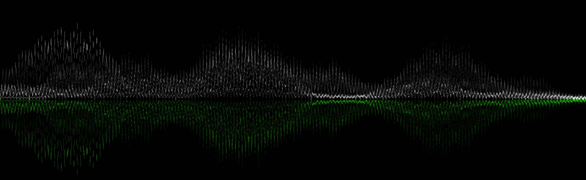

Noise cancellation
A marvel of modern silence.
Featuring up to two times more noise cancellation than their predecessor, the H2-powered
AirPods Pro are built to let you listen in peace. With control over what you hear — and
don’t hear — you’ll be immersed in songs and podcasts like never before.
Up to
2x
more
Active
Noise Cancellation.

Noise-cancelling microphones and a rear vent are
optimally placed to quickly detect sound coming in, working together to
counter noise before it reaches your ear.

A new driver and improved acoustic algorithms help
Active Noise Cancellation reduce more unwanted
noise, so nothing interrupts listening during your commute and when you need to
focus.
Now with an extra-small size,
four pairs of silicone tips are included to fit a
wider range of ears. The tips create an
acoustic seal that closes in the sound — and secure
AirPods Pro in place.
Adaptive Transparency harnesses the power of H2 to
minimize the intensity of loud noises like sirens or power tools — so you can
comfortably hear the world around you.
Reduces noise at
48,000
times per second.

A higher level
of control
Touch control lets you easily manage playback
functions from the stem. Swipe up or down to
adjust volume, press to play and pause music or answer and end calls, or hold to
switch between Active Noise Cancellation and Adaptive Transparency.